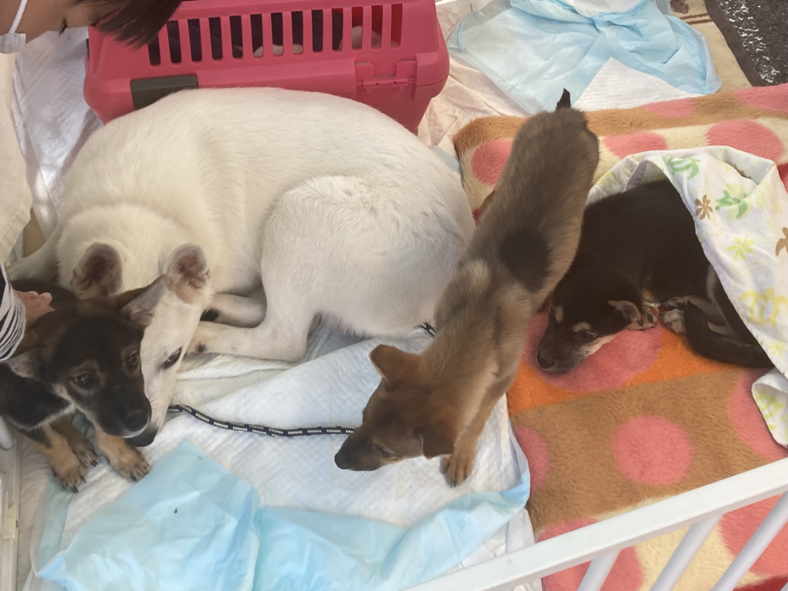

上一章
今次介绍室外的政府活动。这些活动好玩，有时候还有礼物。很多家庭去的。活动政府花钱也花心思，参加者大小一同欢乐，比起直接送钱好很多。
広島中央エコパーク(eco park)日期：2021年10月17日及2022年10月24日
2021年落成位于东广岛的垃圾厂，长期有展览室，开放日有导游团，玩游戏还有礼物）。每次这种活动都有出摊（卖个人二手东西或卖食物，手工艺类），还有各种演出节目，很丰富的。第一年和乐乐去，还买了便宜的新衣服。第二年同一天西条还举办环環境フェア(fair)及爱护动物活动，很多环保科技公司来出摊玩游戏送礼物。
现在音乐表演（好像是贺茂高中）
现场书法表演
粉红垃圾车

学习使用消防喉

垃圾厂介绍册子
关于厨余的剧场

垃圾车

打游戏学垃圾知识垃圾

科学原理实验

自助展厅
人力发电（室内展览）
VR看屎尿处理（有微生物吸食的）

导游团

介绍展板

玩游戏赢礼物

出了购物袋还有用海洋垃圾做的笔


笔的介绍

专门给小朋友的折纸搬运车

足浴，这里足浴的热水忘了用什么再生能源发电。
现在看看垃圾场开放日垃圾场以外的部分

草地是出摊的地方

这些都是卖吃的，有桌子及垃圾桶

我吃了冰淇淋

非常喜欢这件衣服，人家出摊卖的，2000日元。

500日元的日式睡衣

怀旧昭和时代衣服
看完垃圾场，我们去西条中央看環境フェア(fair,2022年)。

入口

玩游戏学环境保护


吴港高等学校eco tech部。这是一个技校，日本的技校也挺不错的。

学校介绍

技校学生研发的环保车（具体科学我并不知道）
环境fair送的小零食
这也是送的可以循环再用打开来洗的吸管


可以消毒但又不是酒精的消毒药水，没有味道的。叫次亚盐素酸水。


今天礼品大集合
环境fair有神乐表演

看神乐的人不少。

表演完还有这个传统扔菓子（还是什么）活动，现在大家都兴奋起来。

小妹妹接到了。
最后我们来看看爱护动物展览，这是one heart，即我们去神石高原Tiergarten的团体主办。除了有爱护动物知识还有领养。

主办团体
爱护动物知识

日程

带领养的动物

带领养的动物

这里也有表演看，这是夏威夷舞

下一章